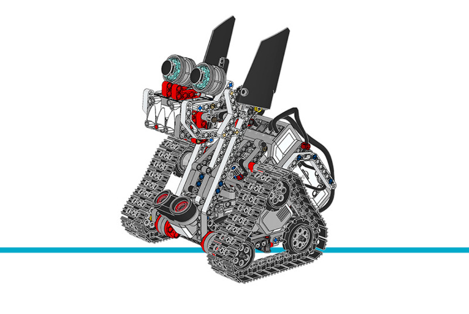

ズナップ¶
このサンプルプロジェクトでは、ズナップが障害物を避けながらランダムに動き回ります。 物体を検出すると、その物体までの距離に応じて異なる音を鳴らします。
組み立て説明書
こちらから拡張セットモデルの組み立て説明書をすべて確認できます。また、 このリンクからズナップの説明書に直接アクセスできます。

Figure 34 ズナップ
サンプルプログラム
#!/usr/bin/env pybricks-micropython
"""
Example LEGO® MINDSTORMS® EV3 Znap Program
------------------------------------------
This program requires LEGO® EV3 MicroPython v2.0.
Download: https://education.lego.com/en-us/support/mindstorms-ev3/python-for-ev3
Building instructions can be found at:
https://education.lego.com/en-us/support/mindstorms-ev3/building-instructions#building-expansion
"""
from pybricks.hubs import EV3Brick
from pybricks.ev3devices import Motor, UltrasonicSensor
from pybricks.parameters import Port, Direction
from pybricks.robotics import DriveBase
from pybricks.tools import wait, StopWatch
from pybricks.media.ev3dev import SoundFile
from random import randint
# EV3 Brickを初期化します。
ev3 = EV3Brick()
# ポートAとDの2つのモーターを設定します。正の速度値で
# ロボットが前進するように、モーターの回転方向を
# 反時計回りに設定します。これらがズナップの左右のモーターです。
left_motor = Motor(Port.A, Direction.COUNTERCLOCKWISE)
right_motor = Motor(Port.D, Direction.COUNTERCLOCKWISE)
# ズナップのホイール直径は約45mmです。
WHEEL_DIAMETER = 45
# axle trackとは、左右のホイールの中心間の距離です。
# ズナップでは約150mmです。
AXLE_TRACK = 150
# ドライビングベースは2つのモーターで構成され、各モーターに
# ホイールが付いています。ホイール直径とaxle trackの値は、
# 走行コマンドを送ったときにモーターが正しい速さで動くように使います。
robot = DriveBase(left_motor, right_motor, WHEEL_DIAMETER, AXLE_TRACK)
# 頭のモーターをデフォルト設定で設定します。
head_motor = Motor(Port.B)
# 超音波センサーをセットアップします。物体を検出するために使います。
ultrasonic_sensor = UltrasonicSensor(Port.S3)
# タイマーをセットアップします。ランダムな時間だけ動くために使います。
timer = StopWatch()
# プログラムのメイン部分です。無限に繰り返す
# ループです。
while True:
checking = True
move = 0
# このループは、物体をチェックしながらズナップを動かします。
# 物体が400mmより近づくまで繰り返します。
while checking:
# タイマーをリセットし、動く時間をランダムに決めます。
timer.reset()
random_time = 600 * randint(1, 3)
# ズナップは3つの異なる動きをします。
if move <= 1:
# 時計回りに旋回します。
robot.drive(0, 250)
# 最初は少し待ちます。
if move == 0:
wait(500)
move = 2
elif move == 2:
# 反時計回りに旋回します。
robot.drive(0, -250)
move = 3
else:
# 前進します。
robot.drive(800, 0)
move = 1
# ランダムな時間が経過するか物体が検出されるまで
# 動き続けます。物体が検出されると「checking」変数が
# 「False」に設定されます。
while checking and timer.time() < random_time:
checking = ultrasonic_sensor.distance() > 400
wait(10)
# 走行を止めます。
robot.drive(0, 0)
# 物体が250mmより近いか確認します。
if ultrasonic_sensor.distance() < 250:
# 吠えて、頭を前に出して噛みつきます。
head_motor.dc(-100)
ev3.speaker.play_file(SoundFile.T_REX_ROAR)
wait(250)
head_motor.stop()
wait(1000)
else:
# 頭を動かしてシューと威嚇します。
head_motor.dc(-100)
wait(100)
head_motor.stop()
ev3.speaker.play_file(SoundFile.SNAKE_HISS)
# 頭のモーターを初期位置に戻します。
head_motor.run_target(1200, 0)